{kind=link}
{kind=link}
{kind=link}
{kind=link}
{kind=link}
{kind=link}
{kind=link}
{kind=link}
{kind=link}
{kind=link}
{kind=link}
{kind=link}
{kind=link}
{kind=link}
{kind=link}
{kind=link}
{kind=link}
{kind=link}
 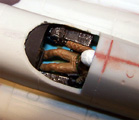
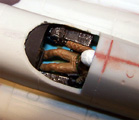
Amodel 1/72 Ilyushan IL-40 “Brawny”
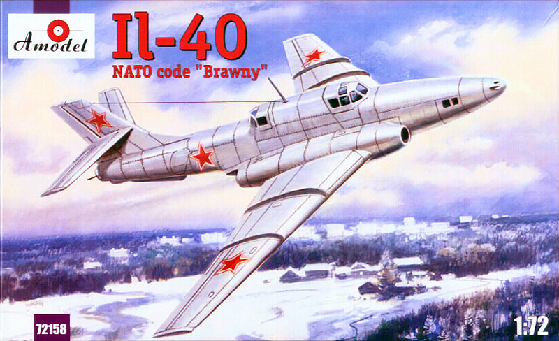
Kit #72158 MSRP $36.95 $33.26 from Squadron Mail Order
Images and text Copyright © 2010 by Matt Swan
Developmental Background
Design work for the IL-40 close support aircraft began around 1950 and looking at the aircraft the influences of both the IL-28 Beagle and the IL-2 Shturmovik seem obvious and like the IL-2 the fuselage was heavily armored. Engine technology was definitely more advanced than the early and immediate post WW-2 jets in that this aircraft featured twin afterburning Mikulin AM-5 turbojet with maximum thrust rating of 2,700 kgf each. The first prototype aircraft was entering flight testing in 1953 and initial performance results were very good, right up until the cannons were fired. Exhaust gasses from the nose mounted cannons were sucked into the engine intakes causing engine flame-outs and engine sputtering even when only a couple rounds were fired.
Ilyushian engineers extended the intakes all the way to the nose of the aircraft and relocated the cannons to a ventral pod to overcome the exhaust gas issue which gave the aircraft a double barrel shotgun appearance. Not only was the aircraft fuselage heavily armored but this type included ejection seats for the crew and perforated airbrakes for dive stability. Final armament configuration featured four 23mm cannons mounted in the belly and a single remote controlled 23mm barbette in the tail. Four small bomb bays were mounted in the wings with 100kg capacity each and hard-points for 1,400 kg in bombs or rockets could be mounted under the wings. Aircraft maneuverability was such that it offered a significant challenge for MiG-15 and MiG-17 pilots when flown in mock confrontations. By 1955 the type began State acceptance trails and five airframes were completed when suddenly the entire program was shut down and the VVS doctrine changed from close support of the army on the battlefield to a nuclear strategy.
The Kit
Amodel from Russia designs and produces some of the most interesting and exotic 1/72 kits I have found on the market however they are all done on a limited run basis using low pressure injection molding processes. This is good for the modeler as it seriously broadens the range of subjects to model however this is a double edge sword in that the short run, low pressure molding, while keeping costs down does negatively impact product quality. This kit is available as either the short intake prototype IL-40 or the long intake production version IL-40P, today we will be examining the short intake version. Looking at the six sprues of light gray parts surface texture feels good and the engraved panel lines appear clean and consistent. There is some minimal flash on some parts but nothing really serious. There are sink marks in some key areas along the top of the engine pod and at the forward area of the fin. Internal detail is very sparse with only seats, rudimentary rudder pedals, simple stick and dash with recessed instrument faces which lack internal detail. Additionally the plastic is soft, very soft and prone to tearing when being removed from the main sprue even with the use of sprue cutters.
The two clear parts for the fore and aft canopies demonstrate good clarity but are thick with very heavy frame lines for the aft unit and frame line so light as to be nearly nonexistent for the forward unit. These pieces are also somewhat oversized so do not fit well to the fuselage. Overall parts fit is not good. When placing the fuselage halves together or the wing panels or the engine pod halves together there is a definite size variance and parts warpage issues plus the panel lines do not mate well. The use of filler putty is a most definite requirement for assembly of the kit and some artful whittling may also be needed. The engine intakes and exhaust nozzles do not line up properly with the nacelle openings and the fit of the engine pod to the aft area of the fuselage is horrible. The wings suffer from large gaps at the joint to the engine pod as well.
Checking parts inventory we have six sprues of light gray low pressure injection molded parts totaling fifty eight pieces and two clear parts for a total of sixty pieces in the box. All parts trees are packaged in a single poly bag with decals and instructions packed separately.
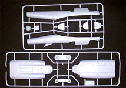
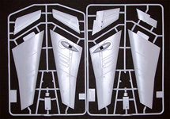
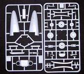
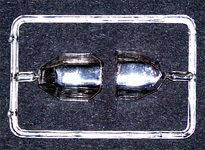
You may click on any of the small images above to view larger pictures
Decals and Instructions
Kit assembly instructions consist of a medium sized eight page booklet with a brief historical introduction to the aircraft followed by a two page parts map. We get ten exploded view assembly steps that seem to imply that the parts will indeed fit together nicely – they lie.
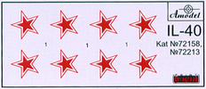 There are no color call-outs anywhere within these assembly views and no construction tips are given. The last page shows decal placement and just three exterior paint colors. Since this aircraft never made it beyond the first four or five production craft nothing in reality was ever done beyond the basic aluminum finish so not much is really required here.
Kit decals are about as basic as you can possibly get with only the minimum Russian stars. There are no service stencils or warning markings provided whatsoever. Would they have been found on what is essentially a prototype aircraft or not? I can’t answer that yet. The decal quality appears okay with good print registry and adequate color density. I’ve used a few of these Amodel decals before and found they work best if applied with some Future to prevent silvering.
Conclusions
This is an interesting and rare model, something you won’t find coming out of the mainstream modeling industry and as a result of such is not for the beginner. The fit is poor, internal detail is nearly nonexistent and plenty of filler is needed. To complicate this, the only accurate finish is natural metal so surface preparation must be immaculate. Of course this does cause the modeler to pause and consider possible fictional schemes which could be pulled from many other Soviet aircraft of the era. Overall, an interesting subject but one that will test the modelers skill.
Construction Begins
I begin with the interior, what there is of it, just to see if enough will be visible to make modification worth while, I think it will be. I think the seats are too basic and there is a total lack of sidewall detail. Now this aircraft is large, easily in the same size category as the F-89 Scorpion so even at 1/72 scale it takes up some room. As such I had in mind right from the get-go to build this in-flight. Okay, so this will help to hide the lack of interior detail however I still feel compelled to do something to help it out but additionally, I need to find a flight crew. A quick trip to the forum and a fellow modeler was able to offer up a couple nice 1/72 modern era figures which, while pretty nice, will still need some adjusting to fit the model. Back to the actual construction now that there is some sort of game plan.
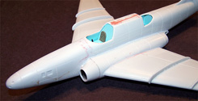
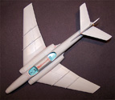
My basic interior color is a VVS Russian Blue from White Ensign Models. The kit provided instrument panel also acts as a forward bulkhead and is most likely totally inaccurate. I went ahead and installed it more as a place holder than anything else. When I get to fixing the cockpit a better IP will be placed. Right now I’m not going to worry too much about the interior but focus more on getting the exterior assembled, filled and sanded to a level that will be suitable for a natural metal finish. I think I spent about three hours gluing stuff together and four days filling seams and trying to get a smooth surface on this beast. Just about every major connection point needed some kind of fill or fix, the main wing joints were very bad, the elevators needed fill all around the forward tip and at the seam with the fin, the wing fences needed filling with Mr. Surfacer 500 and needed reshaping at the leading edge. Surprisingly the landing gear doors fit into the closed position perfectly with no modification needed – go figure. Once all the sanding is complete I will add the pitot tubes and ventral detail pieces, I think I will leave the dorsal antenna until after the cockpit modifications are complete as I feel I'll probably break every one of them off at least once.
12/15/10
With the exterior basically complete it is now time to begin working over the interior. Looking at the series of images below we have the completed exterior and two shots of the bare bones kit interior. As you can see there is nothing very exciting about Amodel’s offering here. In my stash I have the 1/72 Trumpeter IL-28 kit along with the Pavla resin interior. It seems that the seats in this detail set offer a fair match to what I would expect to find in the IL-40. Now I don’t want to sacrifice my Pavla set since I will ultimately be building the Beagle so will use the resin seat as a master to make an RTV mold. In this manner I can cast several seats and then cut them up willy-nilly to see what works. Also I can use various odd-ball resin instrument consoles from the spares box to dress the interior up some. For my entire mold making needs I use Bare Metal Foil RTV material and quick setting resin.
The original kit pieces are ripped from the model and new resin pieces are trimmed and test fit in the forth image. I still need to fashion a shroud for the IP and decide if I even need to make a new panel for this or not. Also, still on the board is fitting some flight crew to the new seats, plenty of work yet to be done – no question there.
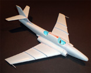
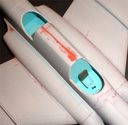
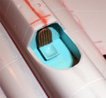
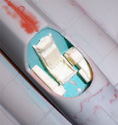
You may click on these small images to view larger pictures
12/22/10
After much playing around with different combinations of old resin panels I have a selection of pieces for both the front and rear pits, these are painted black and dry brushed with silver to bring out some detail. The crew get some judicious trimming of the seat area with my dremel to get a good fit to the new resin seats then are painted up. All pieces are installed with superglue. The front pit instrument coaming is made from a piece of thin clear plastic with some ridges bent into it then painted black. The aft pit coaming is made from a thin strip of white styrene and painted black. The clear parts have been treated with Future, left to cure overnight and masked with thin strips of 3M masking tape. Once completed the interior areas are buffed with a lint free cloth to remove fingerprints (hate it when I find that stray print after the glue is dried) and placed with clear parts cement.
While I was waiting for glue to dry I got bored. I wanted to do something to help demonstrate the physical size of this aircraft then realized I had an old ICM 1/72 Russian fuel truck somewhere that I had won some time ago as a door prize – this would be perfect. Off I went into the dark recesses of the stash to find my prize and sure enough – there is was. 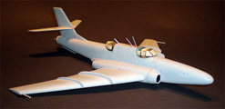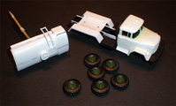 So what you are seeing here is an ATZ 4-131 Fuel Bowser. This is really a pretty neat little kit by itself with good undercarriage detail and good fit. So far it has been a pleasure to assemble and effectively killed some time while the glue set up. Finally the upper aerials are placed (the two rabbit rear thingies being replaced with stretched sprue) and this kit is ready for a quick cleaning then some black primer. Sadly I found that my can of Krylon gloss black has run dry so I need to make a trip to the store and restock before this project can move ahead.
1/01/2011
When I went to the store to buy more gloss black paint they were out of Krylon so I picked up a can of Valspar gloss black to see how it would perform. I decanted this in the same manner as I do with any rattle can paint, that is using a large drinking straw stuffed over the spray head and collecting the paint in a glass container. Of course this is done over a large sheet of newspaper as I do not wish to have my wife create bodily injury on myself for damaging her furniture. Safety first!
The paint laid down very nice, covered well and was sandable after a short period of dry time. After a day I shot the entire model with Alclad aluminum watching for any reaction to the Valspar paint – nothing bad happened even when I got a little heavy with the Alclad application. 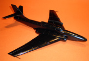 So far, so good. Next I masked off a couple areas to shot with dark aluminum. Everything went well until I removed the masking tape and several sections of Alclad lifted off the model. I have never had this happen before as Alclad usually is so hot that it chemically bonds right to the model so I am guessing that it could not penetrate the Valspar paint and get a good bond. Not wishing to deal with a lot of pain repairs I quickly gave up on the idea of contrasting panels with this build and went right to decals after fixing these early lift issues.
Decals were placed after a quick dip in Future floor polish and went rather quickly, in truth there are not many decals involved here so no real problems. Antenna were made from invisible thread drawn across a black magic marker and attached with spots of superglue. The fuel bowser was painted with Model Master olive drab and weathered with a combination of sludge wash, Rust-All and ground pastel chalks. The in-flight pictures were done by suspending the model in front of a scenic board using invisible thread and four studio lights to eliminate shadows. The Yak-9 is simple for some additional size reference, this Brawny is a big bird!


{kind=link}
{kind=link}
{kind=link}
{kind=link}
{kind=link}
{kind=link}
{kind=link}
{kind=link}
{kind=link}